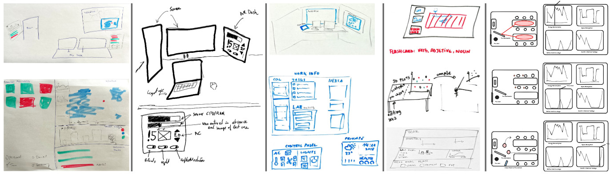

Designing Situated Dashboards: Challenges and Opportunities | HCI Stuttgart

Authors. Anika Sayara, Benjamin Lee, Carlos Quijano-Chavez, Michael Sedlmair
Venue. ISMAR (2023)
Abstract. Situated Visualization is an emerging field that unites several areas - visualization, augmented reality, human-computer interaction, and internet-of-things, to support human data activities within the ubiquitous world. Likewise, dashboards are broadly used to simplify complex data through multiple views. However, dashboards are only adapted for desktop settings, and requires visual strategies to support situatedness. We propose the concept of AR-based situated dashboards and present design considerations and challenges developed over interviews with experts. These challenges aim to propose directions and opportunities for facilitating the effective designing and authoring of situated dashboards.